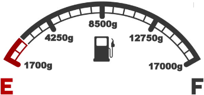

Smart Fuel Monitoring System Tower 169
M10 Fuel remaining: 302g
(Updating every 5 seconds)Alert!!! Container is full. Email sent.

1700g - 10% Fuel - Cartridge Replenished
Alert!!! Container is full. Email sent.
1700g - 10% Fuel - Cartridge Replenished